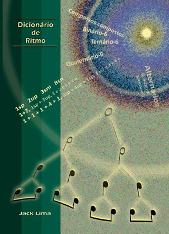

Artigos

Escolas com Software para prática da linguagem musical.
Inteligência Artificial e a Lógica Matemática.
Artigo Completo

Prisão em Escalas, Harmonia, Improviso e Escrita.
O Sonho e a Frustração dos Músicos
Artigo Completo
Max Cast com
Joe Castro/Orlando
Elenco especial que trata sobre a Ciência da Música, Tecnologia, Arte e Business em geral.
Play List
Todas Participações
Maxwell Clemente
Bobo da Corte - Diogo Henrique e Davi/ Tiago Mura e Juliano (Clipe Oficial)
Play List

Primeiro software para prática da linguagem musical.
O multi-instrumentista, professor e compositor Jack Lima entra para o RankBrasil com um novo recorde em 2014. O empresário que também é colunista e programador criou o Primeiro software para prática da linguagem musical do país.
Artigo Completo

Livro com maior número de ritmos musicais
Um trabalho que demorou mais de duas décadas para ser concluído foi reconhecido oficialmente pelo RankBrasil em 2013, transformando-se em um incrível recorde brasileiro na área da música.
Artigo Completo
Escolas com Software para prática da linguagem musical
Escolas com Software para prática da linguagem musical
Os fundamentos estão estruturados na Inteligência Artificial e na Lógica da Matemática, o que permite adquirir o domínio da mente e do corpo, portanto, sobre todos os instrumentos, ao invés de se limitar a um único instrumento, e tipos de repertórios.

Tudo depende de instalações mentais, uma criança não aprende a falar logo que percebe que precisa se comunicar, nem aprenderia o significado das palavras se apenas o fizesse repetir.
O cérebro sofre duas consequências a influência e o conhecimento, ambos são instalações mentais nas quais passamos por processos durante anos. O cérebro sofre a influência quando é apenas um feto, isso conclui que todas as pessoas passam por instalações sonoras quando são formadas durante a gestação, porém algumas pessoas estão mais expostas a determinados tipos de situações e cenários do que outras, o que dar seguimento a influência da média social.
Posteriormente há necessidade mesmo que não exposta de encontrar os motivos para toda influência que sofremos, e explicar através do conhecimento com ferramentas otimizadas para que o cérebro encontre os caminhos corretos, aprendendo com os próprios erros e falhas.

A Música é um Idioma, sendo assim, deve ser tratada como uma Linguagem Estruturada para fazer acontecer a comunicação, e evidenciar que o Alfabeto é como a Cifra, as Vogais e Consoantes são como os Intervalos, as Palavras são como a Harmonia, e as Frases como as Melodias.
O Ritmo está presente em tudo na natureza, dessa forma Jack Lima realizou Anatomia Rítmica Geral - O Sonho de Pitágoras, que consiste na Matemática Rítmica a compreensão da forma Positiva e Negativa, e que da como prova real os Motivos da existência de cada Compasso, totalizando no Ritmo um recipiente para o ingrediente Melodia .
A Music Classes conta com apoio do Sistema Musical Definitivo (SMD Jack Lima), que atua internacionalmente na abordagem da consciência linguística do Idioma Matriz, e que oferece soluções para Professores, Músicos e Iniciantes em Música, a não se limitarem no conhecimento da Música através de repertórios.
MaxCast com Jack Lima
1ª Escola na Capital do Brasil com Software de Música.
Jack Lima | Hino Nacional Brasileiro Baixo 1 Corda
Jack Lima | Hino Nacional Brasileiro Piano Binário-5
Jack Lima | Hino Nacional Brasileiro Viola
Jack Lima | TEDx
Jack Lima | Faustão

Internacional | Bateria em 4D